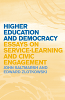

A masterful collection of essays on the democratic potential of education
A masterful collection of essays on the democratic potential of education


 A masterful collection of essays on the democratic potential of education
A masterful collection of essays on the democratic potential of education

|  |
Higher Education and DemocracyEssays on Service-Learning and Civic EngagementJohn Saltmarsh and Edward Zlotkowskicloth EAN: 978-1-43990-037-6 (ISBN: 1-4399-0037-X) |
"[This] book is a significant addition to the field of service-learning and civic engagement in higher education and should become a standard resource. The authors are arguably the two most significant thought leaders in service-learning and civic engagement today, and the breadth and depth of their assembled essays�on issues of definition and rationale, models, on-the-ground implementation, institutional change, future directions�are remarkable. Higher Education and Democracy does an admirable job of illustrating the evolution and complexity of the authors' thinking regarding the most significant issues facing the field."
—Patti H. Clayton, Consultant (PHC Ventures) and Senior Scholar with the Center for Service and Learning at Indiana University�Purdue University Indianapolis
Higher Education and Democracy is a collection of essays on how civic engagement in higher education works to achieve what authors John Saltmarsh and Edward Zlotkowski consider the academic and civic purposes of higher education. These purposes include creating new modes of teaching and learning, fostering participation in American democracy, developing and respecting community and civic institutions, and encouraging the constant renewal of all these dimensions of American life.
Organized thematically, the twenty-two essays in this volume provide signposts designed to advance higher education�s journey toward fulfilling these civic purposes. For the authors, service-learning is positioned as centrally important to the primary academic systems and structures of higher education: departments, disciplines, curricula, and programs that are central to the faculty domain. Progressing from more general and contextual themes to specific practices embodied in ever larger academic units, the authors conclude with observations on the future of the civic engagement movement.
Contributors include Donna Killian Duffy, John N. Gardner, Ira Harkavy, Barbara A. Holland, Kevin Kecskes, Keith Morton, KerryAnn O�Meara, R. Eugene Rice, and the authors.
"This is a valuable resource for professors and administrators in higher education using or supporting service learning."
—Library Journal
"The complete work serves as a useful tool for academics, administrators, and staff members to understand the historical roots of the service-learning movement. The authors� experiences presented in this collection elucidate the persistent obstacles confronting those who seek to fulfill higher education�s civic mission through the scholarship of engagement. The work provides tangible suggestions for overcoming those obstacles through a plethora of examples; however, its strongest contribution is its argument for the development of a new engaged epistemology that parallels Ernest Boyer�s (1996) scholarship of engagement.... The book serves as a valuable resource for those faculty, staff, and administrators interested in developing an academic environment that promotes civic engagement using service-learning as the bridge 'between institutional rhetoric and institutional action, between professed values and actual practice."
—The Journal of Higher Education Outreach and Engagement
"[D]ramatically convey[ing] the hopes and concerns that animated the movement from the mid-1990s to the late 2000s...these lively and argumentative essays' significance is illuminated by prefaces commenting on the context in which each one was written.... The essays that follow are good reading."
—Change
"These essays provide readers with a rich glimpse of the foundations, evolution, diverse implementation models, examples of institutional change, and future of the service-learning and civic engagement movement.... [T]he readings are organized to show clearly both the complexity and the promise that pedagogies of engagement, such as service-learning, offer and why community engagement is strengthened when framed by a purposive civic intent."
—Metropolitan Universities Journal
"The arrangement of the essays is excellent, building upon each other and providing tools for navigating this pedagogy. The authors first create a sense of need and urgency for civic engagement in higher education.... From beginning to end, this collection of essays provides a variety of perspectives, information, and examples that will move higher education institutions toward a more civically engaged society through educating future leaders."
—The Review of Higher Education
Acknowledgments
Introduction Putting into Practice the Civic Purposes of Higher Education, John Saltmarsh and Edward Zlotkowski
SECTION I: General Need
Introduction, R. Eugene Rice
1. Social Crises and the Faculty Response, Edward Zlotkowski
2. The Civic Promise of Service-Learning, John Saltmarsh
SECTION II: Antecedents
Introduction, Keith Morton
3. Education for Critical Citizenship: John Dewey�s Contribution to the Pedagogy of Community Service- Learning, John Saltmarsh
4. Addams, Dewey, and Day: The Emergence of Community Service in American Culture, John Saltmarsh (with Keith Morton)
SECTION III: Service-Learning Pedagogy
Introduction Donna Killian Duffy
5. Does Service-Learning Have a Future?, Edward Zlotkowski
6. Pedagogy and Engagement, Edward Zlotkowski
7. Academic and Civic Engagement, Edward Zlotkowski
SECTION IV: Service-Learning in the Curriculum: The First Year
Introduction, John N. Gardner
8. Service-Learning and the First-Year Student, Edward Zlotkowski
9. Service-Learning and the Introductory Course: Lessons from across the Disciplines, Edward Zlotkowski
10. Getting Serious about Service: Civic Engagement and the First-Year Experience, Edward Zlotkowski
SECTION V: Service-Learning in the Curriculum: The Disciplines
Introduction, KerryAnn O�Meara
11. Mapping New Terrain: The American Association for Higher Education�s Series on Service-Learning in the Academic Disciplines, Edward Zlotkowski
12. The Disciplines and the Public Good, Edward Zlotkowski
13. Opportunity for All: Linking Service-Learning and Business Education, Edward Zlotkowski
14. Emerson�s Prophecy, John Saltmarsh
SECTION VI: Engaged Departments
Introduction, Kevin Kecskes
15. The Engaged Department in the Context of Academic Change, Edward Zlotkowski and John Saltmarsh
16. Characteristics of an Engaged Department: Design and Assessment, John Saltmarsh (with Sherril Gelmon)
SECTION VII: The Engaged Campus
Introduction, Barbara A. Holland
17. Indicators of Engagement, John Saltmarsh and Edward Zlotkowski
(with Elizabeth L. Hollander)
18. Minority-Serving Institutions as Models, Edward Zlotkowski
19. Community Colleges as Models, Edward Zlotkowski (with Donna Killian Duffy and Robert Franco)
20. A New University with a Soul, John Saltmarsh
SECTION VIII: Over a Decade Later
Introduction, Ira Harkavy
21. Students as Colleagues: Enlarging the Circle of Service-Learning Leadership, Edward Zlotkowski (with Nicholas Longo and James Williams)
22. Engagement and Epistemology, John Saltmarsh
Conclusion Looking Back, Looking Ahead: A Dialogue, John Saltmarsh and Edward Zlotkowski
References
Contributors
Index
Dr. John Saltmarsh is Director of the New England Resource Center for Higher Education (NERCHE) and a faculty member in the Higher Education Administration Doctoral Program in the Department of Leadership in Education in the College of Education and Human Development at the University of Massachusetts, Boston.
Edward Zlotkowski is Professor of English and founding Director of the Bentley Service-Learning Center at Bentley University. He writes and speaks extensively on a wide range of service-learning and civic engagement topics and served as general editor of the American Association for Higher Education's twenty-one-volume series on service-learning in the academic disciplines.
Education
American Studies
Philosophy and Ethics
© 2015 Temple University. All Rights Reserved. This page: http://www.temple.edu/tempress/titles/2038_reg.html.